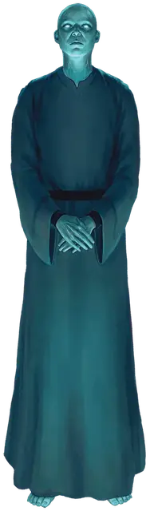

Гипнос маген
Hypnos Magen
Средний Конструкт, без мировоззрения

Класс Доспеха 12
Хиты 34 (4к8 + 16)
Скорость 30 футов
| мод | спас | ||
|---|---|---|---|
| СИЛ | 10 | +0 | +0 |
| ЛОВ | 14 | +2 | +2 |
| ТЕЛ | 18 | +4 | +4 |
| мод | спас | ||
|---|---|---|---|
| ИНТ | 14 | +2 | +2 |
| МДР | 10 | +0 | +0 |
| ХАР | 7 | −2 | −2 |
Иммунитет к урону яд
Иммунитет к состояниям отравление, паралич, очарование, испуг, истощение
Чувства пассивное Восприятие 10
Языки понимает языки своего создателя, но не говорит, Телепатия 30 фт.
Опасность 1 (200 опыта)
Бонус мастерства +2
Особенности
Пламенная смерть. Когда маген умирает, его тело распадается в безвредной вспышке огня и дыма, оставляя после себя все, что он носил или нёс.
Сопротивление магии. Маген совершает с преимуществом спасброски от заклинаний и прочих магических эффектов.
Неестественная природа. Маген не нуждается в воздухе, еде, питье и сне.
Действия
Психическая плеть. Глаза магена начинают светиться серебряным светом, пока он целится на одно существо, которое может видеть в пределах 60 футов от себя. Цель должна преуспеть в спасброске Мудрости Сл 12 или получить 11 (2к10) урона психической энергией.
Внушение. Маген накладывает заклинание внушение [suggestion] (Сл спасброска 12), не требуя никаких материальных компонентов. Целью должно быть существо, с которым маген может общаться телепатически. Если существо преуспевает в своем спасброске, то оно становится невосприимчивым к заклинанию внушение [suggestion] этого магена на протяжении следующих 24 часов. Базовой характеристикой магена является Интеллект.
Описание
Магены - это магические, человекоподобные существа, созданные заклинанием сотворение магена или другими магическими методами.
Хотя маген и выглядят как гуманоид с зеленой кожей, он являются конструктом. Когда он ранен, видно, что его кровь имеет цвет и консистенцию ртути. Он существует исключительно благодаря магии. Когда он умирает, его тело исчезает во вспышке безвредного огня и облаке дыма, которое быстро рассеивается.
Магические слуги. Магены - идеальные слуги. При сотворении магена, каждому прививается инстинкт защиты себя и своего создателя, и он без колебаний следует указаниям своего создателя. Когда приказ выполнен, маген встает неподвижно и замолкает, пока его создатель не отдаст новый приказ.
Гипнос магены владеют телепатией и используют свою силу внушения, чтобы контролировать других. Их создатели используют магенов, чтобы заставлять врагов отступать или сдаваться.
Гипнос магены не носят оружия, полностью полагаясь на свои экстрасенсорные способности, чтобы манипулировать и причинять вред другим существам.